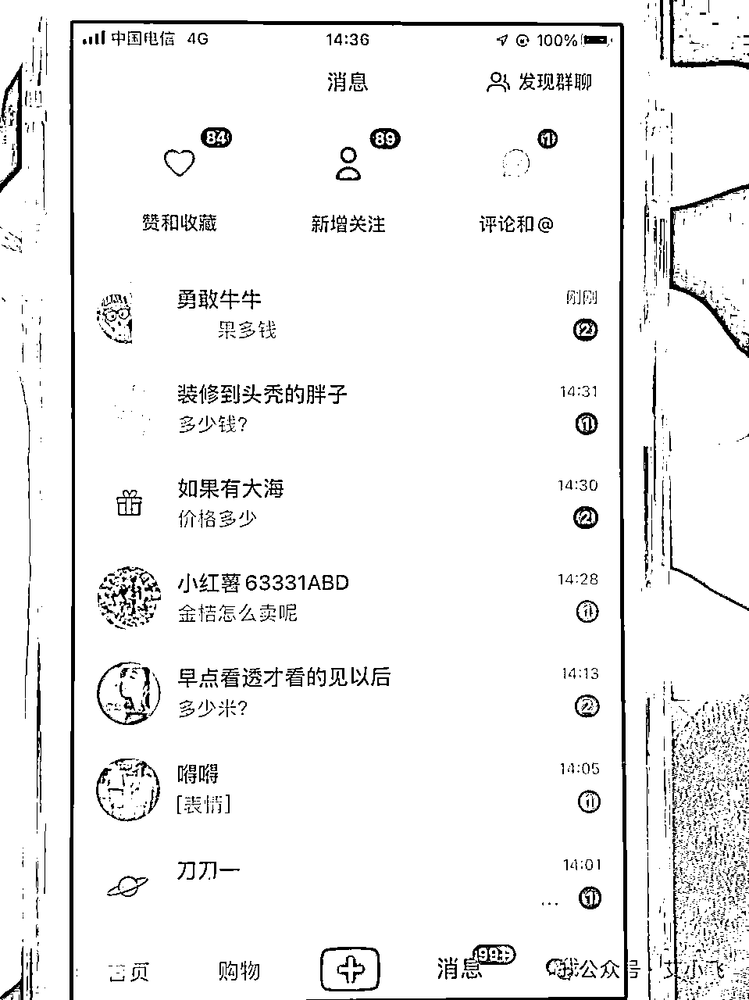
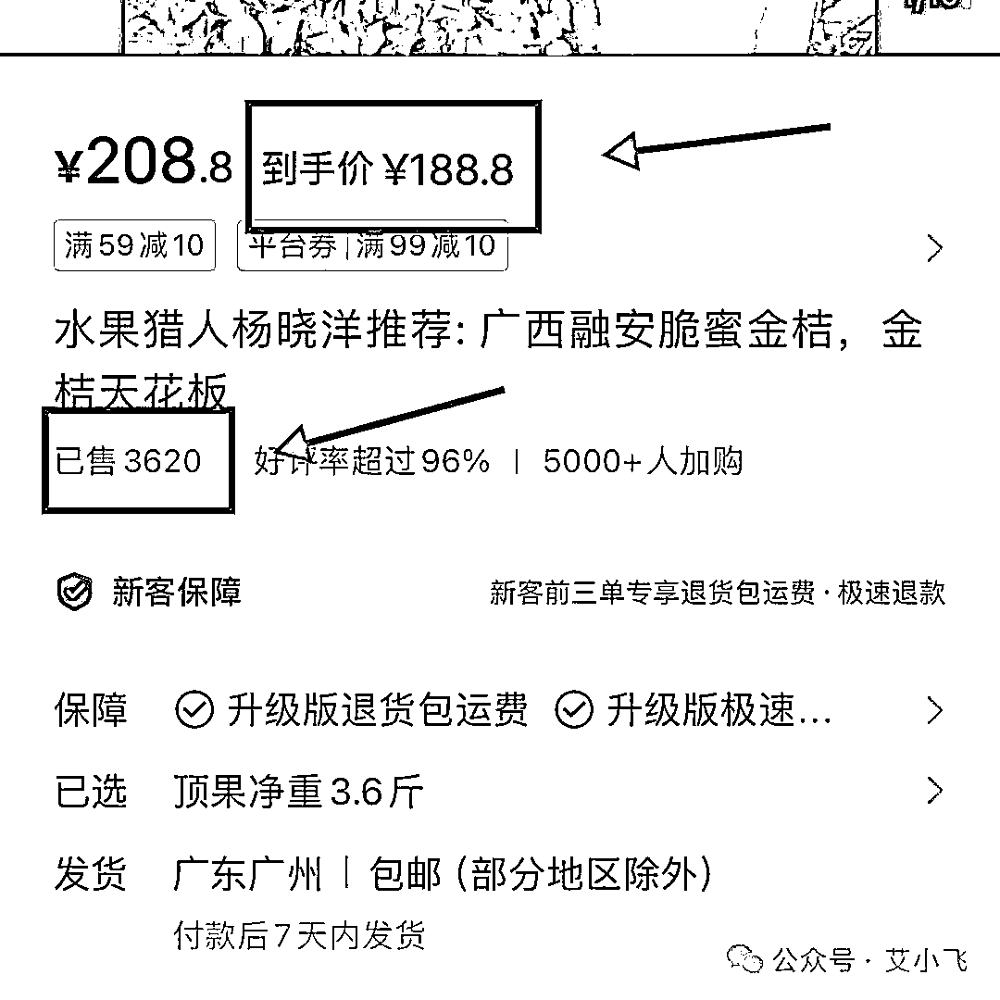
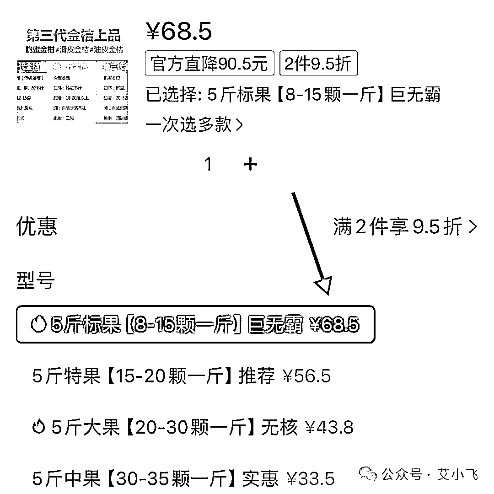
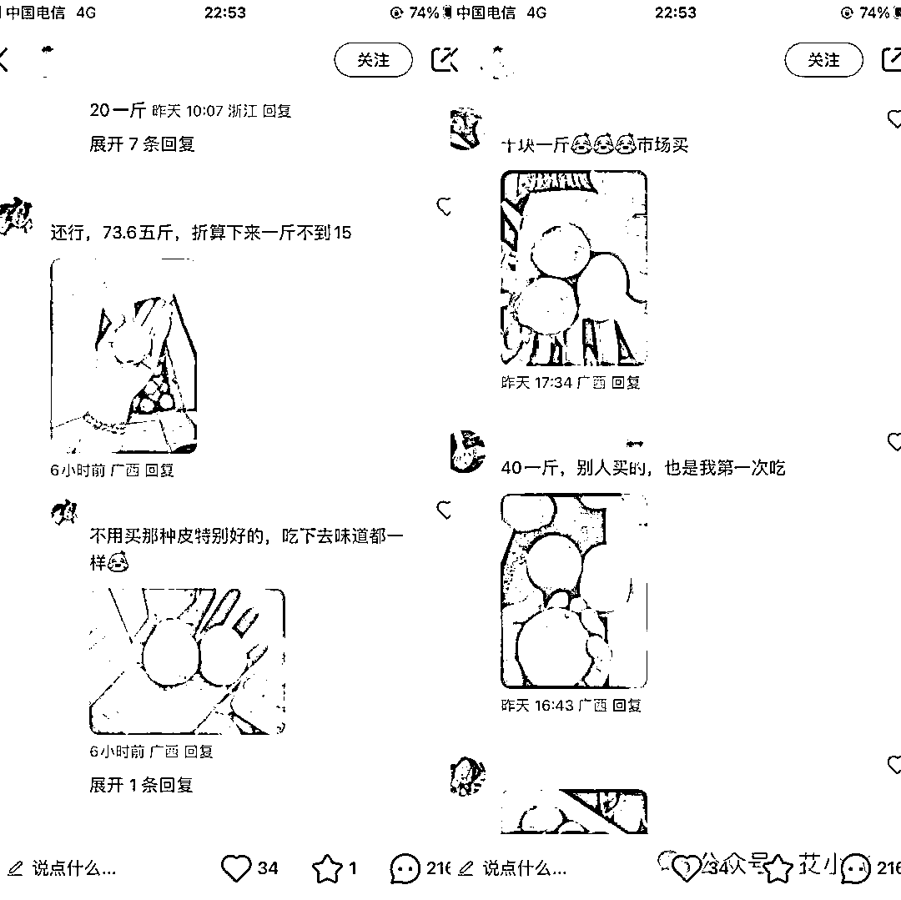
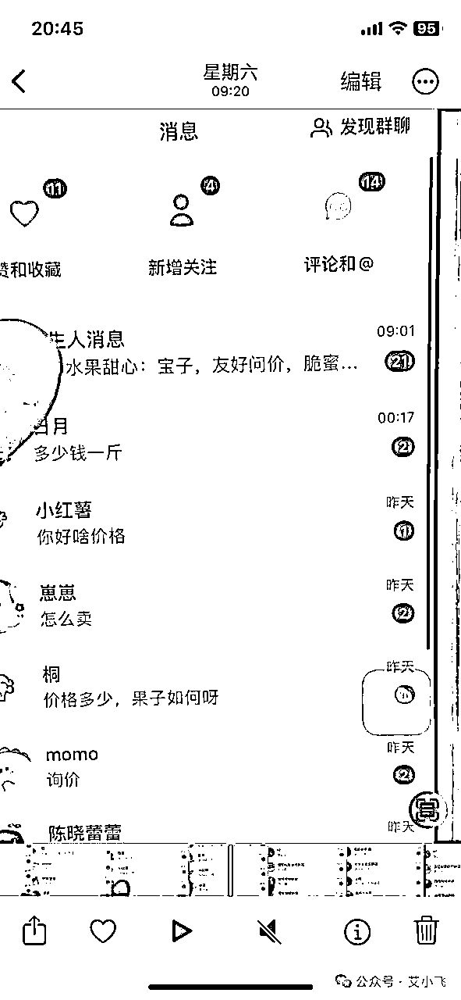
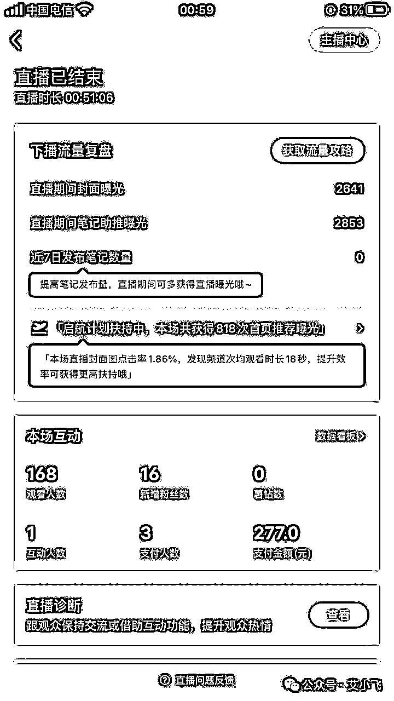
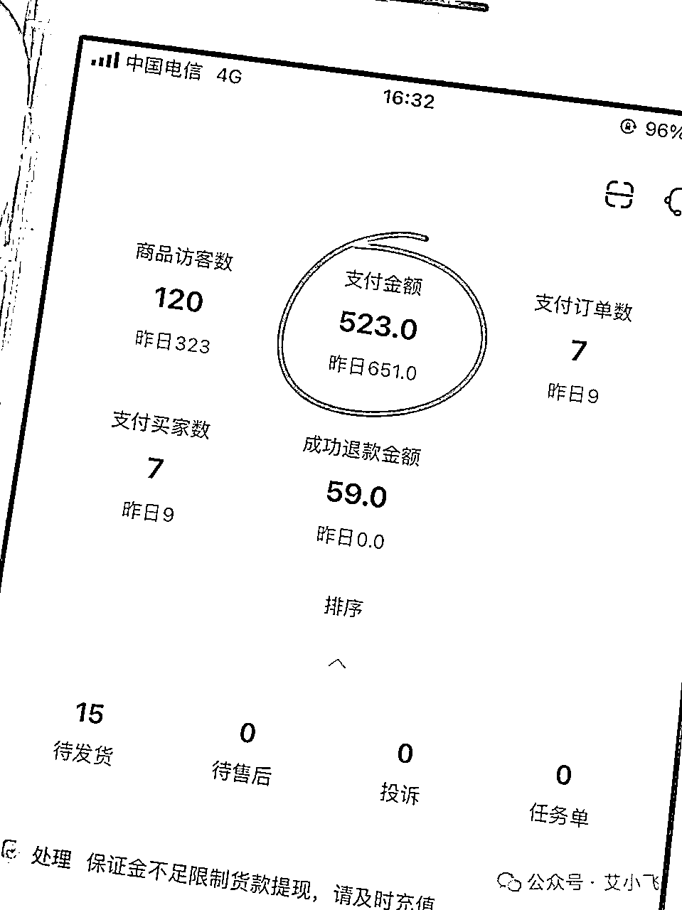

来源：https://lw03aeuj0n.feishu.cn/docx/DBP9dkc9josW6Qxn4cZc99dmnCg
哈喽，大家好，我叫艾小飞
咱们好久都不聊项目了，今天来说说。最近这两天我在小红书上赚到钱的经验和案例分享给你们
我知道很多朋友们都还没有找到一个适合自己的项目，更没有通过一个项目真正的赚到钱。
所以这篇文章我将会为赚不到钱而发愁的朋友们写的，希望能给你们某些新的赚钱思路，学以致用。趁过年前能轻松的赚到更多的钱。

我做的这个项目产品是跟季节性有关的。就是我们广西柳州本地的融安脆蜜金桔
先来说说我当时为什么会选择这个产品在小红书卖？
因为这段时间我也选了很多品，不怕你们笑话，一个月我连续测了五个品，每个都失败了。
冷静思考了好几天，不知道要卖什么样的产品才合适
正好前段时间哈尔滨和广西旅游都火出圈了，我在想在这种热度下，会有什么产品可以借势下？
当时想到了我们广西的水果！而且近期广西水果又频繁的上了热搜，我预测广西的水果会有自带流量的趋势
所以我去浏览器上搜索：广西最贵的果是什么，看看卖什么水果比较好
查了资料，除了榴莲外，最贵的就是融安脆蜜金桔了
很多吃过的朋友都懂，当地商超质量好点的果都要卖到60块一斤！
质量再差的，也要卖到20块一斤！
就像网友说的：它除了贵，没啥缺点！
我也是看中了它的贵，客单高，利润也高！所以想用这个产品去测试，看看能不能跑得通
如果产品利润不够高，我是不会去做的，赚的钱不多，只会浪费时间
怎么看利润？
我去小红书上去搜索它的客单价，同等规格下，小红书卖188元，销量3620

而拼多多，如果拿货价，居然都不到70块！

这中间的利润有多少？
如果测试跑通的话，一单可纯赚快120元。夸张吧！利润都超过了成本价！
能找到这种产品是非常难得的，所以我就决定用这个产品去做测试看看能不能跑得通！
其实在测试之前，我有一个习惯动作，就是看同行是怎么做的
我去小红书搜索“脆蜜金桔”这个关键词，发现这个产品的热度很大，需求量也很大，但真正会做小红书的商家却很少
那也许这就是我的机会了！自我评估能力和风险后，我就正式进入到测试的环节了
首先我的第一个步骤，就是模仿！
要记住一个真理：小红书的爆款，都是重复的！
要想得到爆款，最快的捷径就是抄！
抄人家的封面、抄人家的标题、抄人家的文案！
我去小红书搜索产品关键词，把热度排行榜前十的标题和封面标题还有文案，全部抄下来备用
但找了两圈，发现这个产品做的商家太少了，我觉得有些标题是不合格的，不是很有吸引力
于是我就扩大范围，去搜索脐橙、榴莲、车厘子，把排行榜前十的标题和封面标题都抄下来。把他们的产品名换掉，套上这产品去试试看
文案类的解决了，下一个环节就是收集封面素材了
因为当时我没有货源，没有产品来拍封面素材，为了降低风险和成本，只能去“借用”别人的素材用一用
怎么借？
这就有技巧了，稍有不注意就会被人投诉侵权或限流封号的
为了避免我账号不被人察觉到，我都是去产品的吐槽评论区里翻的

在小红书上很多女生都喜欢分享好物，但又不喜欢发笔记，所以评论区成了他们的聚集地，在那里晒图、反馈、吐槽、建议等等
这也是我收集最新素材和观察他们背后需求的重要渠道
然后把他们晒的图都保存下来，只要是能吸引我的，看了都觉得很有意思的图，我都保存在了相册里
然后再进行多张筛选，最终选出3~5张图片作为我的封面备选，最后用美图秀秀走五道工序去痕，这样一张低风险低成本又有爆款概率的封面，轻松搞定完成了
封面搞定了，下一步就要进行发布笔记测试了
怎么测试？
这个环节很关键的啊！
如果你的第一篇笔记测试跑得好的话，后面流量基本都会在一个稳定的平行线内
如果你的第一篇笔记测试的效果不好，后面哪怕你的封面标题再有吸引力，流量也是很难拉起来的。
所以我的第一篇笔记，全都以引导互动为主，想办法把流量给拉到一个高度去，方便后期出单快
但因为这个项目还在做，就不方便给你们透露具体账号信息了，我就跟你们说下我发第一篇笔记的思路是什么吧
说个可能很多人都不懂的冷知识吧，小红书给你推流的本质是，要看你的内容是否有优质
你知道平台是靠什么来决定你的内容是好是坏呢？
靠人工？
那小红书工作人员估计忙到冒烟都审核不过来！
为了更好的鉴别创作者的内容好坏，它依靠的是通过发布笔记后的用户数据反馈来决定的
比如说你发这篇笔记出去，系统给你默认推送给100个人看，这100个人里面，有多少人点赞，有多少人关注
给你推送了100人如果一个也没有给你点赞，而你的同行却有5人点赞，那么平台就会给他推流，而不给你推流
所以用户互动的数据很关键！关注或评论数越多，流量越推越高
这样你就会理解，为什么我的第一篇笔记，全都是以互动为主了
好，知道了第一篇笔记的发布逻辑，那怎么互动？又成了一个难题
要想笔记互动率高，那就发用户爱看的东西，投其所好，才能顺势而为
他们对什么感兴趣？
我在他们评论区泡了两个小时，发现他们最关心的一个问题就是：好吃，贵！
既然这样，那我就在笔记里多去强调，我卖的果有多便宜！这么好的果有多性价比！
但，我不会在笔记里公开价格，就是想把吸引力给拉满，让他们主动的评论问我
这样既能筛选精准用户，也能拉高互动率，还能引导后面来的人从众跟风操作，获得更多的流量推荐
到这里也看出来，我做笔记的思路是什么了吧。
我是借用了人性中的贪婪+好奇+占便宜+从众跟风的心理，把他们对这篇的期望值拉满，然后吊着他们的胃口不放价，但他们又怕错过低价的好机会，从而引起更多人的关注
我平时比较喜欢研究人性的，凡是从人性角度去做商业，基本上生意都不会太差，平台玩流量也如此
发布笔记快一个小时后，越来越多的人来找我咨询怎么买，多少钱的
这个用户需求已经被我激发出来了，证明是有市场的！那下一步就是需要对接货源的问题了
当时面临了两种模式的选择问题
一个是在小红书上开店铺，走有货源模式
一个是引流到私域微信卖，走无货源模式
但不管哪种模式，都需要尽快的找到供应商合作
我第一时间想到了拼多多，虽然虚假宣传很严重，但抵不住它价格低啊
通过技巧我找到了拼多多商家的电话号码，挨个打电话过去跟他们谈合作，看看能不能一件代发，走微信付款的模式，不走拼多多平台
谈成了三家合作商，不过人家说了在拼多多卖那是走量的，我刚开始合作的单量那么少，还要单独给我打单子，是不可能跟拼多多价格同步的
要想单独给我一件代发，每单在拼多多价格基础上加10~20块成本...
虽然有点不太满意，但后面我算了下，哪怕高了那么多的成本，我依然每单都还能保持有50%的纯利润，比如进50卖100，我还是勉强能接受的，先忍忍吧
选择了开店卖货的模式，那就说说开店的步骤流程吧，至于小红书怎么开店，这个我就不多说了，你去小红书搜有很多详细的流程可参考
在小红书开店有个好处是，可以先卖货，不用交1000块的押金，用个人的身份证实名后就可以发布商品售卖了。很简单的
因为当时这篇笔记流量一直在往上涨，太多人都来问我怎么买了

所以我刚开好店铺，就引导他们下单，一瞬间就马上有五个人下了单
当时我还在感叹，小红书真牛啊，这个钱也太好赚了吧。我算了下这五单的利润，纯赚150到手
我看到这笔记流量还一直往上涨，不想浪费掉，好好利用这流量开播卖货做二次转化
第一次开播不太会说什么，直播了一个钟全程讲的都是废话
比如讲起了我为什么来卖金桔的故事，没想到他们还爱听，去下了三单来支持我
下播后我快笑死了，这也行？

因为里面有个利润大单，所以277的营业额我纯赚150，第一次感到小红书直播是真的香啊
如果你们想做这个项目，可以开播卖货试试，讲些无聊的废话那些女生也爱听的，主要是讲废话还能出单，也是没谁了哈哈
不单单是笔记给我带来了订单，直播也能成为助攻，我花了一天半，成交15单，纯利润50%，你们帮我算算赚了多少

当天有人下单后，那第二天就要去给客户发货了，怎么发呢？
当然是把客户信息整理成文档，发送给商家发货咯
因为跟供应商没见过面，信任度较差，我这边跟他们的合作模式是当天结款，当天发货，这样就不存在什么信任的问题了
供应商那边帮我一件代发后，会给我发一份客户订单的物流单号，我就复制单号上传到小红书平台，就坐等他们收货结款了
因为这个项目做到一半，后面还有续集还没写完，所以这次整个我做小红书日赚200的项目也分享得差不多了
其实我从有想法做这个产品到现在也不过三四天的时间。现在我后台已经有将近快15单了。
这15单里我算了下。起码也赚有500块了。
三天赚500块，对于很多做项目还没跑通。或不知道要做什么项目赚钱的朋友们来说，还是很有吸引力的
这个项目不单单是起步快，而且做起来难度不是很大，我已经把整个流程和步骤都分享给你们了，想在过年前小赚一波的朋友，可以去试试
因为我还正在做这个项目，现阶段有些过于细节的东西我就不方便透露出来了。
好了，今天的文章就分享到这里，下期我来给你们说说，我是怎么发现小红书无人直播玩法的
靠小红书直播我一天能赚到多少？为什么我会特别重视小红书直播？他能给我们带来什么样的启发？我们该如何借用小红书直播去扩大项目赚大钱？我们该如何抓住小红书直播风口？
下集，更精彩！
今天分享就到这，我叫艾小飞
原创：艾小飞
转载可私信
禁止搬运和抄袭